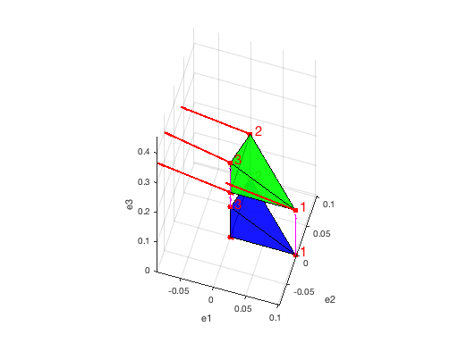
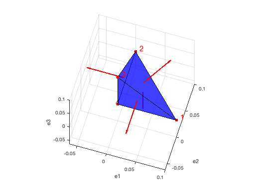
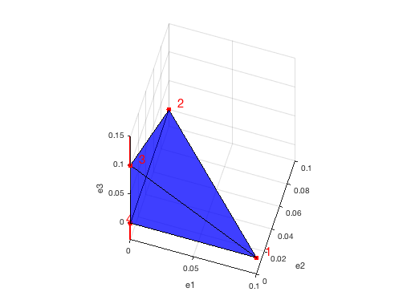
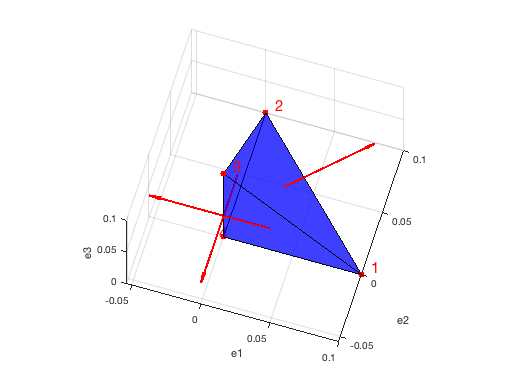
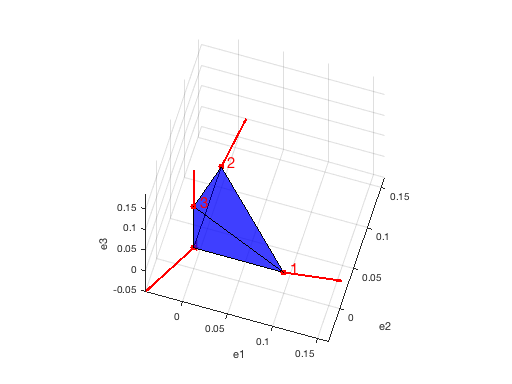

Continuum Mechanics, Exercise 8
Paul Kulyk Raphael Wenger
paul.kulyk@students.unibe.ch raphael.wenger@students.unibe.ch
Due Mai 2, 2017
Contents
- Include the predefined tensor math functions
- Parameters
- 8.1 Computation of all necessary variables
- 8.1 (1) Definition of the contact forces
- 8.1 (2)
- 8.1 (3) Sum of stresses * Area = force
- 8.1 (4) Sum of moments
- Plot of the nodal forces
- 8.2 (5) Hydrostatic stress
- 8.3 (6) Uniaxial stress
- 8.4 Shear stress (7)
- 8.5 Optional multiaxial stress
Include the predefined tensor math functions
addpath('../../Matlab/'); if exist('imported','var') ~= 1 def_symbols; imported = 1; end
Parameters
%Toogle symbolic values, used for testing
enableSyms = 1;
8.1 Computation of all necessary variables
define the geometry and build the tetrahedron
Xi = [[1/10 0 0]; [0 1/10 0]; [0 0 1/10]; [0 0 0]; ]'; % density rho = 1000; % kg/m^3 %Gravity g = 10; % m/s^2 % Time symbols syms T Tmax t
Rotation around e1,e2,e3 respectively
R1 = @(theta) [ [ 1 0 0 ]; [ 0 cos(theta) -sin(theta) ]; [ 0 sin(theta) cos(theta) ];]; R2 = @(theta) [ [ cos(theta) 0 -sin(theta) ]; [ 0 1 0 ]; [ sin(theta) 0 cos(theta) ];]; R3 = @(theta) [ [ cos(theta) -sin(theta) 0 ]; [ sin(theta) cos(theta) 0 ]; [ 0 0 1 ];];
%Motion of the tetrahedron as in exercice 7 Tmax = 1/2; if enableSyms == 1 T = t; %Time defined as a symbol for starters else T = Tmax; end %Rotation Rt = R3(2*pi*T/Tmax); %Translation bt = [ 0; 0; 3/20*T/Tmax]; %Transformation matrix y =@(R,x,b) R*x + b;
%Contact force defined with handles F_contact = @(theta) [-pi^2/15*(cos(theta)-sin(theta)); -pi^2/15*(cos(theta)+sin(theta));5/3]; F_contact0 = @(fact,theta) fact*[sin(theta)+cos(theta);sin(theta)-cos(theta);0]; %Apply the given values F_con = F_contact(4*pi*T); F_con0 = F_contact0((125+pi^2*(4+60*T))/3000,4*pi*T);
Function handle to clean up all these triple integrals
TripInt =@(fun,v1,l1,u1,v2,l2,u2,v3,l3,u3) int( int( int( fun, v1, l1, u1), v2, l2, u2), v3, l3, u3);
% Function handle for the are of faces
faceArea = @(nodeB,nodeC,nodeD) 1/2*cm.norm(cm.cross_product((nodeC-nodeD),(nodeB-nodeD)));
%Computation of the new vertices yt = y(Rt,Xi(1:3,1:3)*b,bt); % Simple transform of b into x into y...
%Center of gravtiy V = 1/6000; % M = 6*V*TripInt(rho,b1,0,1-b2-b3,b2,0,1-b3,b3,0,1); % Function handle for the centre of gravity COG =@(xx) 6*V/M*TripInt(rho*xx,b1,0,1-b2-b3,b2,0,1-b3,b3,0,1); yc = COG(yt);
%Final positions
yi(:,1) = y(Rt,Xi(:,1),bt);
yi(:,2) = y(Rt,Xi(:,2),bt);
yi(:,3) = y(Rt,Xi(:,3),bt);
yi(:,4) = y(Rt,Xi(:,4),bt);
%Get the normals to the faces, centers and area
Ai(1)=faceArea(yi(:,2),yi(:,3),yi(:,4));
Ai(2)=faceArea(yi(:,3),yi(:,4),yi(:,1));
Ai(3)=faceArea(yi(:,4),yi(:,1),yi(:,2));
Ai(4)=faceArea(yi(:,1),yi(:,2),yi(:,3));
%Use the provided function for the normals to the surface
[xnormi xcenti] = cm.get_tetra_normal(Xi(:,1),Xi(:,2),Xi(:,3),Xi(:,4));
[ynormi ycenti] = cm.get_tetra_normal(yi(:,1),yi(:,2),yi(:,3),yi(:,4));
symbolic!
%Computation of the Area-weighted normas for i = 1:4 Aini(:,i) = Ai(i)*ynormi(:,i); end
%Only non-singular matrix is @i=4 i=4; wt = -4*cm.invert(cm.scalar_product(ycenti(:,i),Aini(:,i))*I+cm.dyadic_product11(ycenti(:,i),Aini(:,i)))*(F_con0-cm.cross_product(yc,F_con)); % Antisymmetric stress tensor W for i = 1:4 WtiAini(:,i) = -1/2*cm.cross_product(wt,Aini(:,i)); end %Symmetric stress tensor if enableSyms == 1 syms T11 T12 T13 T21 T22 T23 T31 T32 T33 Tt = [T11, T12, T13; T12, T22, T23; T13, T23, T33]; %Taking advantage of the symmetry else Tt = zeros(3) end % Forces vector on the vertices for i=1:4 ift(:,i) = -1/3*(Tt*Aini(:,i)+ WtiAini(:,i))+1/4*F_con; end
8.1 (1) Definition of the contact forces
%Compute the sum of the forces sumift = sum(ift,2); %Compare with the given contact force cm.show1(simplify(sumift-F_con))
/ 0 \ | 0 | \ 0 /
8.1 (2)
Compute the sum of the moments
for i=1:4 Myi(:,i) = cm.cross_product(yi(:,i),ift(:,i)); end %Sum of all moments sumMyi = sum(Myi,2); %Compare with the original moments res2=(simplify(sumMyi-F_con0)); %Round up for the display cm.show1(cm.roundDecimals(double(subs(res2,t,Tmax)),2))
/ 0 \ | 0 | \ 0 /
8.1 (3) Sum of stresses * Area = force
Stress vectors on faces
for i=1:4 itt(:,i) = (F_con-3*ift(:,i))/Ai(:,i); end % Multiplied by the area for i=1:4 Aiitt(:,i) = itt(:,i)*Ai(:,i); end %Sum that sumAiitt = sum(Aiitt,2); %Compare with the given contact force cm.show1(simplify(sumAiitt-F_con))
/ 0 \ | 0 | \ 0 /
8.1 (4) Sum of moments
Stress vectors on faces
for i=1:4 itt(:,i) = (F_con-3*ift(:,i))/Ai(:,i); end % Multiplied by the area for i=1:4 cfiyAiitt(:,i) = cm.cross_product(ycenti(:,i),Aiitt(:,i)); end %Sum that sumcfiyAiitt = sum(cfiyAiitt,2); %Compare with the given contact force res4=(simplify(sumcfiyAiitt-F_con0)); %Round up for the display cm.show1(cm.roundDecimals(double(subs(res4,t,Tmax)),2))
/ 0 \ | 0 | \ 0 /
Plot of the nodal forces
Tt = zeros(3); % Substitute with the value at t=Tmax for i=1:4 ift(:,i) = subs(-1/3*(Tt*Aini(:,i)+ WtiAini(:,i))+1/4*F_con,t,Tmax); end yi=subs(yi,t,Tmax); % Plot the tetras figure(1) cm.plot_tetra_dual(Xi(:,1),Xi(:,2),Xi(:,3),Xi(:,4),yi(:,1),yi(:,2),yi(:,3),yi(:,4)) % Add the forces vectors scaleFact = 0.5; for i=1:4 hold on cm.plot_vector(yi(:,i),yi(:,i)+ift(:,i)*scaleFact,2,'red') end
8.2 (5) Hydrostatic stress
p = 25; % Pressure in KPa %Hydrostatic stress T_hydro = -p*I %Plot figure(2) cm.plot_tetra(Xi(:,1),Xi(:,2),Xi(:,3),Xi(:,4)) % Add the stress vectors scaleFact = 0.0025; for i=1:4 hold on cm.plot_vector(xcenti(:,i),xcenti(:,i)-T_hydro*xnormi(:,i)*scaleFact,2,'red') end
T_hydro =
-25 0 0
0 -25 0
0 0 -25
 8.3 (6) Uniaxial stress
sigma = 10; % Pressure in KPa % Uniaxial stress T_uniax = sigma*(cm.dyadic_product11(e3,e3)) %Plot figure(3) cm.plot_tetra(Xi(:,1),Xi(:,2),Xi(:,3),Xi(:,4)) % Add the stress vectors scaleFact = 0.005; for i=1:4 hold on cm.plot_vector(Xi(:,i),Xi(:,i)-T_uniax*xnormi(:,i)*scaleFact,2,'red') end
T_uniax =
0 0 0
0 0 0
0 0 10
 8.4 Shear stress (7)
thau = 3.5; % Pressure in KPa %Shear stress T_shear = thau*(cm.dyadic_product11(e1,e2)+cm.dyadic_product11(e2,e1)) %Plot figure(4) cm.plot_tetra(Xi(:,1),Xi(:,2),Xi(:,3),Xi(:,4)) % Add the stress vectors scaleFact = 0.025; for i=1:4 hold on cm.plot_vector(xcenti(:,i),xcenti(:,i)+T_shear*xnormi(:,i)*scaleFact,2,'red') end
T_shear =
0 3.5000 0
3.5000 0 0
0 0 0
 8.5 Optional multiaxial stress
%Multiaxial stress T_multi = p*I+sigma*(cm.dyadic_product11(e3,e3))+thau*(cm.dyadic_product11(e1,e2)+cm.dyadic_product11(e2,e1)) %Plot figure(5) cm.plot_tetra(Xi(:,1),Xi(:,2),Xi(:,3),Xi(:,4)) % Add the stress vectors scaleFact = 0.0025; for i=1:4 hold on cm.plot_vector(Xi(:,i),Xi(:,i)-T_multi*xnormi(:,i)*scaleFact,2,'red') end %Hydrostatic pressure hydroStP=1/3*cm.trace(T_multi) %Von mises stress T_prime = T_multi - hydroStP*I; vmStress = sqrt(3/2*cm.frobenius22(T_prime,T_prime)) %The last one doesn't seem to work.
T_multi =
25.0000 3.5000 0
3.5000 25.0000 0
0 0 35.0000
hydroStP =
28.3333
vmStress =
11.6940
 %Finish %publish('exercice8.m')